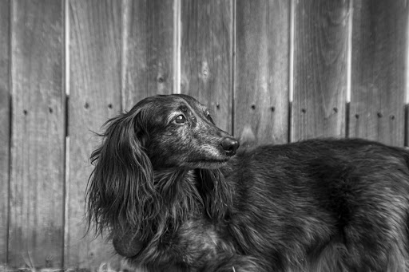
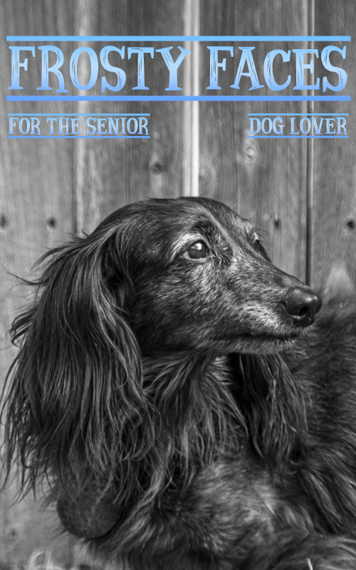

Selecting & Layers
For this lab, I had to find an image I liked and make a magazine cover. I used a black and white photo my husband took of my senior dachshund, Widget, in our backyard.
I cropped the image from its original size to focus more on Widget's face. I called my magazine "Frosty Faces for the Senior Dog Lover" and applied a gradient over the text, giving it a frosty feeling.

